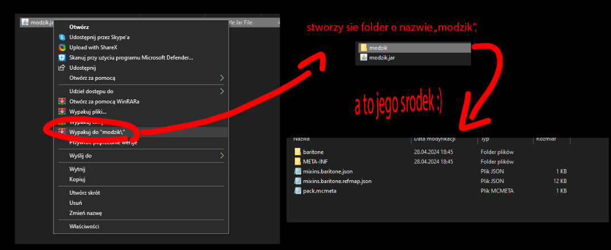

Mówisz sprawdzanemu graczu aby wszedł w %appdata%, następnie w folder minecfrafta (.minecraft) a tam aby wszedł w folder mods
Następnie powiedz aby kliknął w zakładke widok i upewnij się że ukryte elementy są widoczne
Poproś aby usunął wszystkie mody, te które się usuną nie były załadowane do minecrafta, te które się nie usuną sprawdzasz za pomocą WINRARA
*TO ROBISZ Z KAŻDYM MODEM KTÓRY SIE NIE USUNĄŁ 
Tak jak widać na obrazku, mod który mialem wczytany do gry o nazwie "modzik" to był tak naprawde cheat o nazwie baritone